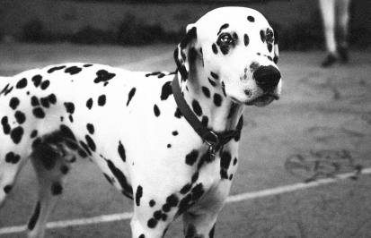
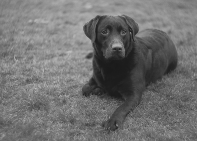
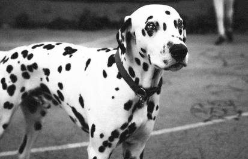
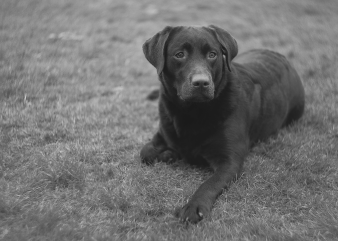

Pets Get Lost
We can help you find them.
 



Vestibulum pulvinar, mauris nec laoreet lobortis, turpis arcu placerat justo, ac tempor libero odio sed massa. Ut a metus accumsan, venenatis ligula nec, aliquet diam. Morbi fermentum maximus mi at lobortis. Ut non scelerisque lacus, a varius mauris. Duis sed condimentum metus, id maximus arcu. Maecenas cursus pellentesque tortor, sed varius justo imperdiet vel.